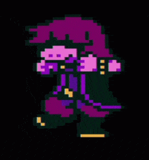
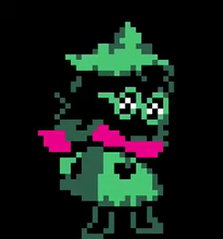
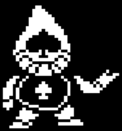
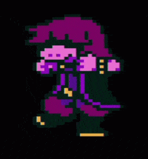
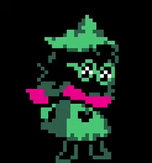
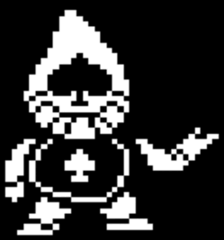

O que é Deltarune ?
De forma resumida, Deltarune é um jogo RPG Elêtronico desenvolvido pela empresa Toby Fox, onde ficou bastante popular por conta do jogo "Undertale" ja que ambos fazem parte da mesma empresa e tambem sao bastante semelhantes.
O jogo teve seu lançamento no dia 31 de outubro de 2018 fazendo um grande sucesso no mundo inteiro.
Capitulo 1
De forma resumida, Kris e Susie foram pegar giz que estava em uma salinha que ficava na escola para o professor, e de repente, ambos cairam em um mundo totalmente diferente, onde são apresentados varios obstaculos ate chegar na safe zone, depois disso e apresentado o personagem chamado Realsei, onde ela conta uma lenda onde três pessoas salvaram o mundo; depois desse dialogo,Realsei concede uma missão para Kris e Susie onde o objetivo principal é fechar "as fontes malignas" e assim restaurando o equilibrio do mundo.
Capitulo 2
No Capitulo 2, Kris e Susie entram numa sala de informatica onde do nada, ambos são levados em outro mundo, nesse Capitulo é introduzido dois personagens (Noelle e Mordecai) que são colegas de Kris. O objetivo desse Cap é resgatar Noelle de um robo que quer dominar o mundo inteiro.
.gif) 




